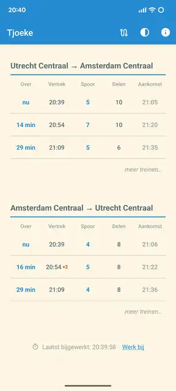
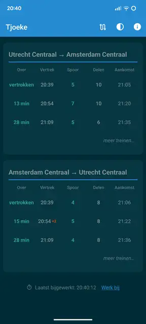

Tjoeke
خرائط وسفر
Tjoeke shows upcoming train departures for your regular route in the Netherlands. Pick two stations and see the next trains in both directions at a glance. Features: • Forward and backward departures on one screen • Station search with autocomplete • Intercity-only filter • Off-peak (daluren) discou
✓ ترخيص مفتوح (GPL-3.0-only) · آخر تحديث: 2026-09-16
1.0.7الإصدار
727 KBالحجم
GPL-3.0-onlyالرخصة
Open in Kanzتحميل APK (727 KB)
Download APK
SHA-256: dc2eb29d8403b707103199ff522acc9bf21053223b7887e6960e933c71ea24fb


امسح الكود لفتح صفحة التطبيق
Scan to open this app page
لو كنز مش متثبت عندك: نزّل متجر كنز.
Not installed? Get the Kanz store.